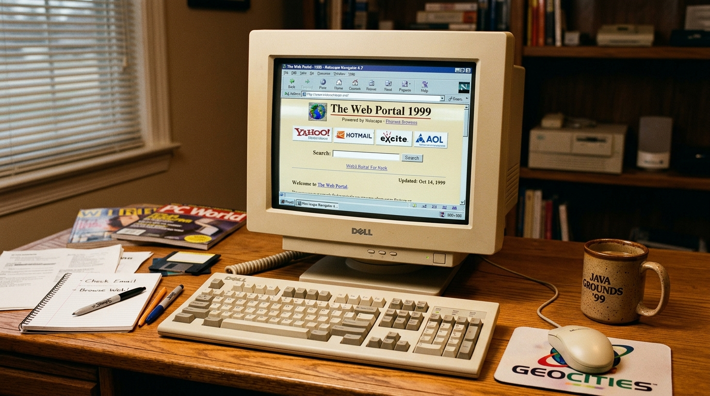
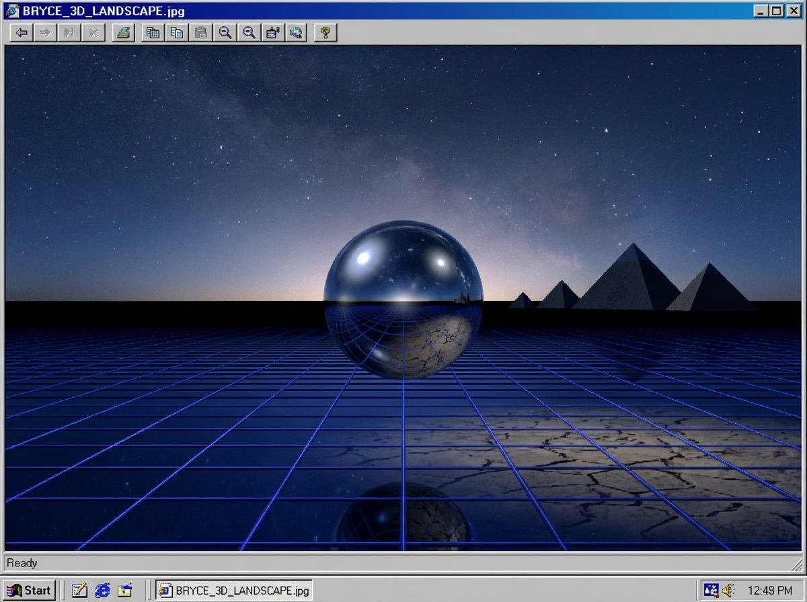
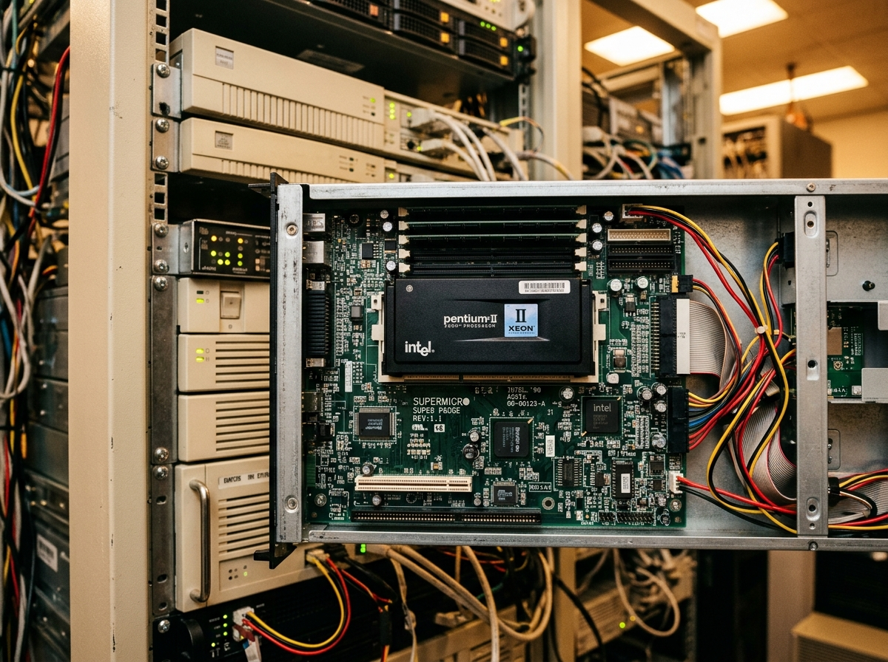

The old web, brought back.
Netscapeit is a retro-inspired web browser and virtual internet ecosystem crafted to recreate the unforgettable experience of browsing at the turn of the millennium. Powered by Xserver, Netscapeit revives the authentic speed, aesthetic, and discovery of the late-90s web without modern tracker bloat or generic layouts.
netscp.netscapeit.org or build locally via Git!
Netscapeit is available as a live web application hosted at netscp.netscapeit.org, and as an open-source development suite. Standalone native binaries for Windows, macOS, and Linux are currently in active development.
| Platform | Target Systems | Status | Version / Date | Download / Action |
|---|---|---|---|---|
| 🪟 Microsoft Windows | Windows 98, 2000, XP, 10, 11 | In Development | v0.1.0-alpha • Active | |
| 🍎 Apple macOS | macOS (Apple Silicon & Intel) | In Development | v0.1.0-alpha • Active | |
| 🐧 Linux / X11 | glibc 2.31+, X11 & Wayland | In Development | v0.1.0-alpha • Active | |
| 🌐 Official Web App | Any modern web browser (Edge, Chrome, Safari, Firefox) | Verified & Live | Latest Production Build | Launch netscp → |
git clone https://github.com/orangePdb/ntscapeit.git cd ntscapeit npm install npm run dev
http://localhost:3000.
- CPU: Pentium II 233 MHz or modern dual-core processor
- RAM: 64 MB (Physical 1999 spec) / 2 GB (Modern Node.js build)
- Display: 800x600 SVGA with 16-bit High Color or higher
- Audio: Sound Blaster 16 compatible or modern Web Audio
- Network: 56k V.90 Modem or broadband connection
- Integrated full Xserver HTTP/1.0 hosting engine.
- Implemented AltaVista full-text search index.
- Added GeoCities Cyberia '99 & live CGI guestbook.
- Added Slashdot '99 Y2K news & threaded discussion.
- Added Netscape Composer live HTML authoring.
Features & Capabilities
Netscapeit is engineered to give you the tactile, visual, and operational feel of the classic internet, backed by modern technology.
Classic Netscape-Inspired Browsing
Authentic beveled toolbars, navigation buttons (Back, Forward, Reload, Home, Search, Netscape Netcenter), persistent bookmarks, and the iconic animated star-shower "N" throbber.
Xserver Companion Engine
Built-in HTTP/1.0 virtual hosting router (xserver/sites.ts) serving standard RFC 1945 headers, status codes, simulated server load statistics, and real-time response inspection.
Virtual Websites & Domains
Surf simulated 1999 websites: AltaVista web search, Slashdot '99 Y2K discussions, GeoCities Cyberia '99, Winamp 2.22 Vault, and the SpaceJam Planet 1999 WebRing.
CGI-BIN Guestbooks & Comments
Interact with functional late-90s web components! Sign the Cyberia guestbook, post comments on Slashdot stories, and view persistent visitor entries.
Netscape Composer (HTML Builder)
Create your own personal retro website with the built-in Composer tool. Write classic HTML, publish directly to Xserver, and receive your own http://xserver.local/pages/ URL!
56k Modem & Dial-Up Simulation
Experience authentic 56k V.90, ISDN, or T1 connection throttling. Includes synthesized dial-up audio handshakes and retro chiptune audio generated dynamically with the Web Audio API.
Interface Gallery & Screenshots
Explore verified visuals and environments from the Netscapeit ecosystem. Click any capture to open the high-resolution viewer.


Documentation & Getting Started
Quick reference for running Netscapeit locally, configuring Xserver, and developing custom retro sites.
1. System Prerequisites
Ensure you have Node.js 18.0 or newer and npm installed on your operating system.
2. Clone & Install
Fetch the repository from GitHub and install all client and server dependencies:
git clone https://github.com/orangePdb/ntscapeit.git cd ntscapeit npm install
3. Start Development Server
Launch the combined Vite frontend and Express Xserver engine:
npm run dev
Open your browser and navigate to http://localhost:3000. You will see the Netscapeit Communicator interface ready to browse!
Netscapeit was founded by orangePdb with a singular mission: Small pieces of the old internet, rebuilt.
In an era of hyper-commercialized, algorithm-driven feeds and cookie-cutter flat design, the early web offered something special: genuine discovery, quirky personal identity, raw HTML creativity, and a spirit of pioneering exploration. Netscapeit honors that legacy through a fully interactive web environment.
| Project Name: | Netscapeit |
| Author / Maintainer: | orangePdb |
| Official Website: | https://netscapeit.org |
| Web Application: | https://netscp.netscapeit.org |
| Repository: | https://github.com/orangePdb/ntscapeit |
| License: | Open Source Project |